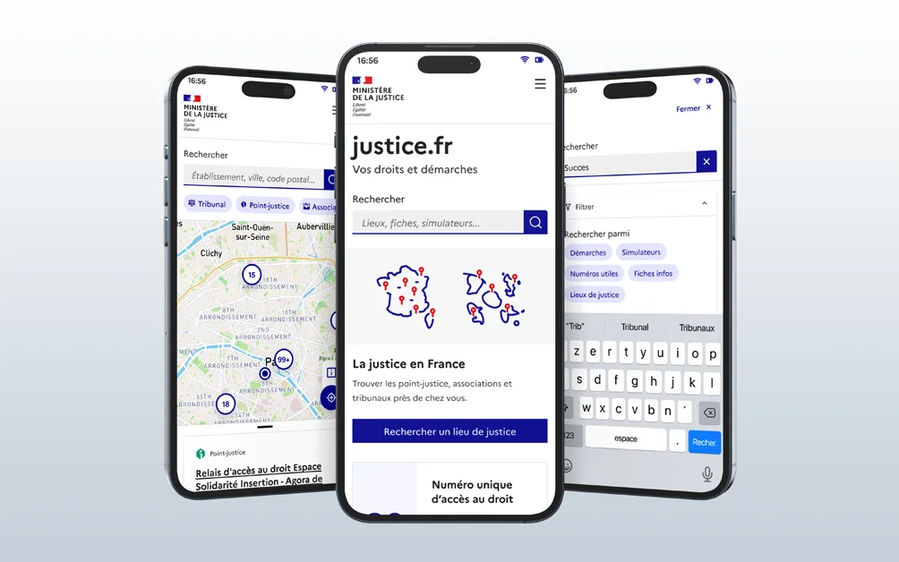

Participation à la conception et la research de l'Application Justice.fr

Contexte client : Le ministère de la justice était en train de concevoir une application mobile nommée “justice.fr” permettant aux justiciables de mieux comprendre et d’avoir accès plus facilement et rapidement à la justice.
Mon rôle : Je suis arrivé sur le sujet en tant que Senior UX designer, sachant qu’il y avait déjà une Squad sur ce sujet avec un designer confirmé. L’objectif étant d’être sûr d’arriver à un travail abouti et à des livrables clairs et complets.
Organisation : Nous avions tous les jours un daily avec le responsable projet, l’équipe produit, l’équipe design et l’équipe tech, et de temps à autre, si nécessaire, une personne de l’équipe métier. Nous avions aussi, en fonction des durées des sprints (pas toujours de la même durée) des rétrospectives afin de voir ce qui allait ou n’allait pas.
Les livrables de ce projet ne sont pour le moment que visibles lors d'un échange/entretien.
Démarches
Partie 1 : Correctif de l’existant
- • L’autre designer a commencé par me donner tous les fichiers qu’il avait commencé à concevoir, autant en terme de fichier figma que de protocole de tests, que j’ai dû corrigé pour la plupart, soit pour des coquilles, soit par manque d’insights utilisateurs.
- • Des ateliers de co-conceptions ont été mutlipliés et la roadmap a été plus précisée afin de pouvoir délivrer au fur et à mesure les différentes options, tout en prenant en compte techniquement que certains outils devaient être intégrés plus tard à cause de développement en cours.
- • Le prototype n’a été que légèrement modifiée pour la première version, afin de permettre aux développeurs de commencer à travailler, mais une nouvelle version vue le jour afin de corriger certains problèmes d’ergonomie et de rajouter les principales fonctionnalités.
Partie 2 : Préparation à des tests utilisateurs
- • Une fois le prototype validé entre les diverses parties prenantes (Equipe produit, métiers, Responsables, Equipe techs et designs), j’ai mis, en collaboration avec l’autre designer, deux protocoles de tests : un pour des tests valides et un pour des utilisateurs en situation de handicap, que nous avons validés tous ensemble, d’abord à travers des ateliers que co-production, afin de prendre en considération toutes les questions que se posaient les différentes parties prenantes, puis en terminant par une présentation globale des deux prototypes.
- • Dans le même temps, afin de montrer à des personnes plus haut placées dans la hiérarchie où en était le projet, j’ai retravaillé certains supports de présentations déjà existants, jugés trop technique par mon responsable.
Partie 3 : Tests Utilisateurs, Analyse terrain et Restitutions
- • J’ai pu animer, en présentiel, plusieurs tests utilisateurs avec des personnes travaillant dans le domaine de la justice et étant au contact avec le justiciable, le justiciable étant difficilement accessible de part la nature de l’utilisateur.
- • J’ai aussi l’occasion de faire un test utilisateur avec un non voyant, permettant ainsi de voir la différence entre une “expérience pensée accessibilité” et une répondant aux réels besoins des personnes en situation de handicap.
- • J’ai aussi eu l’occasion, avec la PO et une personne de l’équipe métier, d’aller sur le terrain, en point justice, afin d’avoir d’autant plus d’insights sur nos différentes parties de l’application.
- • Une fois tous les tests terminés, une restitution a eu lieu avec toutes les parties prenantes afin de voir ce que l’on conservait ou non comme insight, ce qu’il était possible de faire.
- • Comparatif de nos retours avec des tests quanti réalisées par Usertesting.
Partie 4 : Suivi des développements et Audit interne RAAM
- • Maquettes validées, corrigées, place aux deux parties restantes à fournir pour cette version (tout en commençant, bien entendu, à réfléchir à la suite)
- • Suivi constant avec les développeurs, que ce soit par des commentaires sur Figma ou par des messages / calls, en fonction des disponibilités de chacun, afin de pouvoir répondre aux questions de manière rapide et efficiente.
- • Apprentissage et utilisation de la grille RAAM (l’équivalent du RGAA mais pour application mobile) afin de faire un pré-audit interne de l’accessibilité de l’application avant de payer un audit externe.
Livrables :
- • Fichier figma: Un fichier structuré avec plusieurs versions de prototypes, permettant une intégration progressive par les devs.
- • Protocoles de tests: 2 protocoles clairs et reproductibles, validés par toutes les parties prenantes (dont un spécifique pour l’accessibilité).
- • Audit RAAM (Excel): *Un **pré-audit complet** qui a permis d’identifier et corriger de nombreux problèmes d’accessibilité avant l’audit externe, notamment dans la navigation de l’application.*
- • Présentations PPT: 2 supports adaptés : un pour la hiérarchie (non-technique, axé avancée, principalement sur les retours de tests utilisateurs), un pour la suite du projet, ainsi que pour d’autres projets hors périmètre de l’application (outils UX existants).*
Résultats & Impacts :
- • Un score d’accessibilité de 90,24% (grâce à l’audit RAAM et aux tests inclusifs).
- • Une note utilisateur de 4,2/5 (App Store) et 4/5 (Play Store)
- • Une équipe satisfaite et autonome : les livrables et processus mis en place ont permis une transition fluide après ma mission
L’application Justice.fr est aujourd’hui en ligne avec :
Apprentissage :
- • Travailler avec une Squad qui était complétement à distance, avec les contraintes techniques que cela peut engendrer
- • Apprentissage de l’utilisation de la grille RAAM ainsi que de la réalisation d’un protocole de test utilisateur pour personne en situation de handicap ainsi que l’animation de ce test
- • Accompagnement d’un designer plus junior sur un projet et corrections des livrables afin qu’ils soient à la qualité demandée par les managers
- • Animation de tests utilisateurs en présentiel (j’en avais fais qu’en distanciel préalablement)
Un projet ? Un besoin ?
Discutons-en.
Si mon profil vous intéresse ou que vous souhaitez échanger, ce sera avec plaisir, soit via linkedIn (nouvel onglet), soit directement par mail à benech.r(@)gmail.com. Au plaisir !
Pour revenir à l'accueil, c'est par ici !